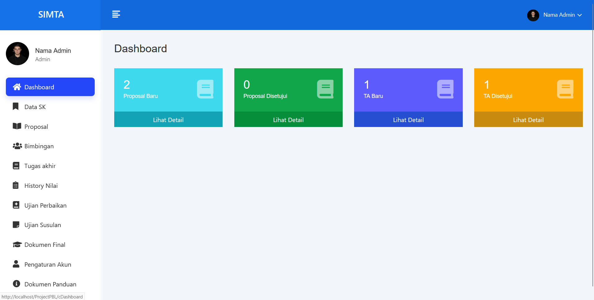

A web-based village tourism management system that
helps administrators manage destinations, events,
and visitor data efficiently. Built using Laravel
and MySQL to streamline local tourism operations and
reduced manual reporting process by digitizing
visitor and revenue tracking.
Tech Stack: Laravel, Bootstrap,
MySQL
Created By: Satria Pamungkas
SMART Toko
A full-featured POS and inventory management system
with accounting and reporting modules. Integrated
machine learning to generate restock recommendations
based on historical sales and holiday patterns using
time-series forecasting and association rule mining.
Tech Stack: Laravel, Flask,
Bootstrap, MySQL

Created By: Satria & Team
SIMTA
A thesis management system that streamlines proposal
submission, supervisor assignment, progress
tracking, and final defense scheduling. Designed to
improve administrative efficiency and reduce manual
coordination between students and faculty. Includes
role-based access control for students, supervisors,
and administrators with structured approval
workflows.
Tech Stack: CodeIgniter3,
Bootstrap, MySQL
Created By: Satria Pamungkas
Project Management System
A web-based project management system designed to
track tasks, deadlines, and team collaboration.
Includes role-based access control and real-time
progress monitoring to improve project transparency
and efficiency.
A Customer Relationship Management (CRM) system
designed to manage leads, customer interactions,
sales tracking, and follow-up activities. Helps
businesses improve customer retention and streamline
sales workflows.